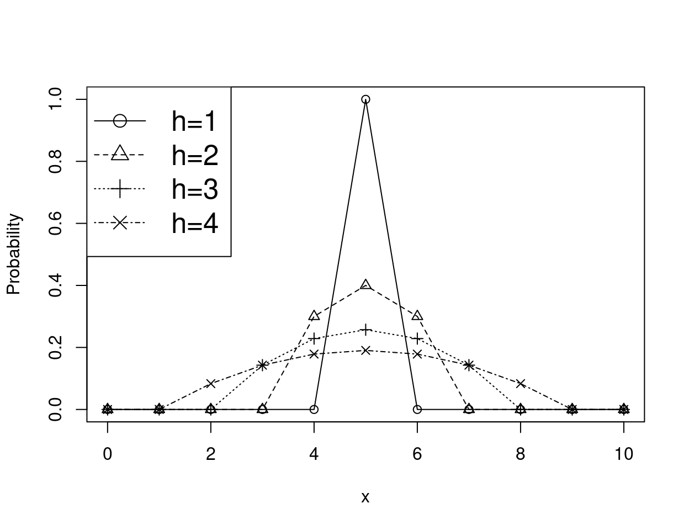
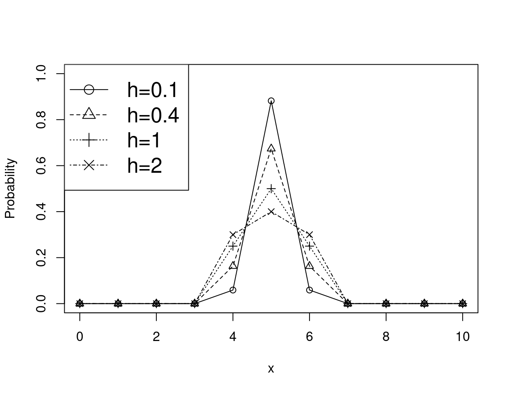
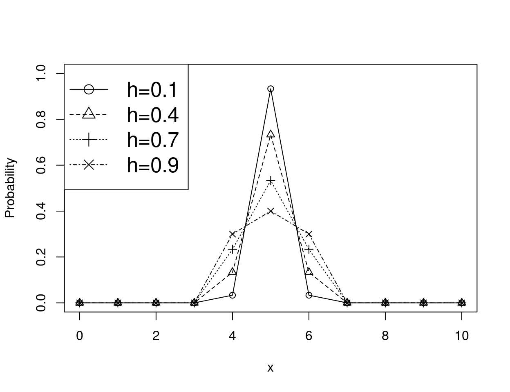
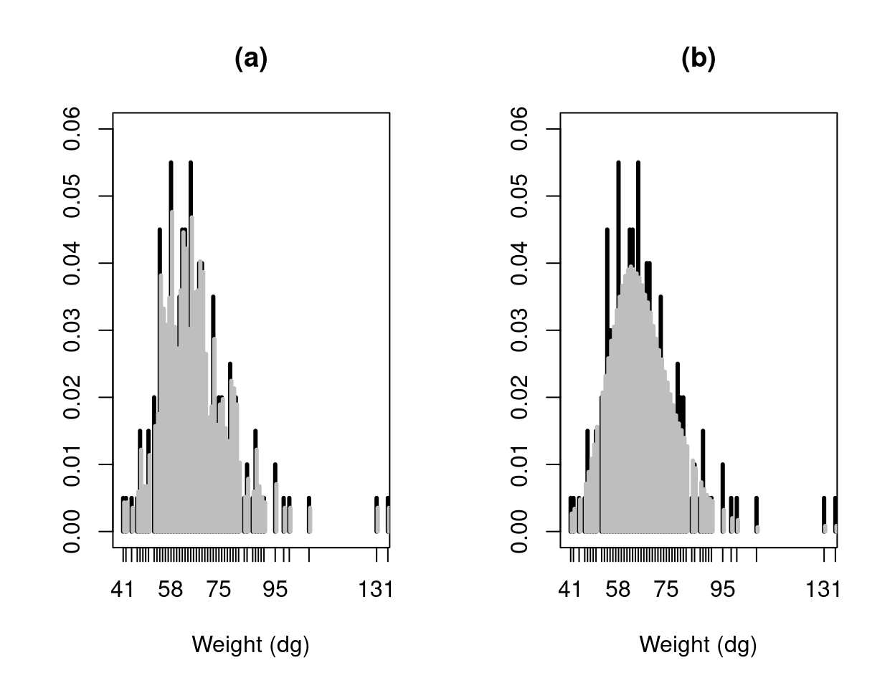

1 Introduction
Since the original works of Rosenblatt (Rosenblatt 1956) and Parzen (Parzen 1962), nonparametric kernel smoothing was often studied for estimating continuous data distributions by using symmetric and asymmetric continuous kernels, e.g., Gaussian, Epanechnikov (Epanechnikov 1969), on the one hand, beta (Chen 1999), inverse Gaussian (Scaillet 2004), on the other hand, respectively. Then, discrete kernel smoothing was developed to specifically address the nonparametric estimation of count data distributions by using discrete kernels associated to discrete probability distributions, such as the kernel of Racine et al. (2020) for ordered data, Conway-Maxwell-Poisson kernel (Huang et al. 2022) and, more recently, underdispersed count kernels (Kokonendji et al. 2023). That was a valuable alternative to the traditional parametric Poisson modeling, which is often of limited use because empirical count data sets typically exhibit over/under-dispersion and/or an excess number of zeros (Kokonendji and Senga Kiessé 2011). One R package implements the kernel method for modeling distributions of continuous (bounded and positive) and discrete (categorical and count) data (Ake package by Wansouwé et al. (2016)). Nevertheless, kernel density estimation using traditional continuous symmetric kernels (e.g., Gaussian, Epanechnikov, rectangular, triangular) is available by using the function density available in R. Various functions for kernel smoothing from the works of Wand and Jones (1995) were also implemented in KernSmooth package (Wand 2025). In addition, multivariate kernel density estimation was developed in ks package (Duong 2007).
The wide variety of discrete associated kernels available in the literature raised the issue of finding one discrete “optimal” associated kernel, which was developed by Senga Kiessé and Durrieu (2024). That new discrete symmetric “optimal” kernel is implemented in the R package kernopt which is also available at https://github.com/thomasfillon/kernopt. Other discrete associated kernels are also available, e.g., Epanechnikov (Chu et al. 2017), triangular and binomial (Wansouwé et al. 2016), for a comparison with the new discrete kernel developed. In addition to the choice of discrete kernel, the choice of the bandwidth parameter is challenging. We propose a cross-validation method for selecting the smoothing bandwidth to be used with the discrete kernel. Illustrations are provided on discrete simulated and real-word application data.
One can refer to the article of Senga Kiessé and Durrieu (2024) for technical details on mathematical results (propositions, theorem and proofs) provided in that paper. The kernopt package not only implements the discrete symmetric optimal kernel but also introduces a data-driven bandwidth selection method based on cross-validation, enhancing the estimator’s adaptability and performance to various data.
By providing a comprehensive and user-friendly implementation, the kernopt package plays a pivotal role in enabling researchers and practitioners to effectively apply nonparametric optimal kernel estimation to discrete count data. Available on both CRAN and GitHub, the package ensures broad accessibility and facilitates reproducibility in statistical analyses. Example usages of the package on both simulated data and real aquaculture data from the SIMTAP project demonstrate the better estimation performance of our proposed method.
The paper is organized as follows. Section 2 presents the fundamental principles of the nonparametric estimation method using discrete associated kernels for probability mass functions. In Section 3, we describe the new discrete symmetric “optimal” kernel developed by Senga Kiessé and Durrieu (2024), with the procedure for bandwidth selection. The performance of the estimator with the discrete symmetric “optimal” kernel is illustrated in Section 4 on simulated data, then applications on real data are provided in Section 5.
2 Nonparametric discrete kernel density estimator
Let \(X_{1}, \ldots, X_{n}\) be a sequence of independent and identically distributed discrete random variable having an unknown probability mass function (pmf) \(f\) to estimate on discrete support \(\mathcal{S}\subseteq \mathbb{Z}\), with \(\mathbb{Z}\) being the set of all integer numbers. For a target point \(x\in\mathcal{S}\) and a bandwidth parameter \(h>0\), the nonparametric estimator \(\widehat{f}_{K,h}\) of \(f\) is given by
\[\begin{equation} \widehat{f}_{K,h}(x)=\frac{1}{n}\sum_{i=1}^{n}K_{x,h}(X_{i}), \tag{1} \end{equation}\] where \(K_{x,h}\) is a symmetric pmf on discrete support \(\mathcal{S}_{x}\), i.e. \(\sum_{y\in\mathcal{S}_{x}}K_{x,h}(y)=1\), \(0\leq K_{x,h}(y)\leq 1\) and \(K_{x,h}(y)=K_{x,h}(-y)\). More precisely, a discrete associated kernel \(K_{x,h}(\cdot)\) with a support \(\mathcal{S}_{x}\) (which contains \(x\)) is a pmf of random variable \(\mathcal{K}_{x,h}\), whose modal probability, mean and variance behave asymptotically as follows when \(h\to 0\): \[\begin{equation} K_{x,h}(x)=\Pr(\mathcal{K}_{x,h}=x) \to 1, \mathbb{E}(\mathcal{K}_{x,h}) \to x \text{ and } \text{Var}(\mathcal{K}_{x,h}) \to 0. \tag{2} \end{equation}\]
The discrete kernel estimator (1) is defined up to the normalizing constant \(C_{n}=\sum_{x\in\mathcal{S}}\widehat{f}_{K,h}(x)\) in Senga Kiessé (2017).
We particularly considered a symmetric pmf \(K_{x,h}\) satisfying the conditions in (2) such that \[\begin{equation} \mathbb{E}(\mathcal{K}_{x,h}) =x, \mathbb{E}(\mathcal{K}^{2}_{x,h}) =\tau^{2}(x,h)<\infty \text{ and } \text{Var}(\mathcal{K}_{x,h})=\tau^{2}(x,h)- x^{2}<\infty, \tag{3} \end{equation}\] where \(\text{Var}(\mathcal{K}_{x,h})\) does not depend on \(x\) and tends to \(0\) as \(h\) goes to \(0\).
2.1 Choice of discrete kernels
We consider two examples of discrete symmetric kernels with mean value equal to \(x\), i.e., \(\mathbb{E}(\mathcal{K}_{x,h}) =x\).
For a positive integer \(h\in\mathbb{N}\setminus\{0\}\), the first example is a discrete symmetric Epanechnikov kernel with \(\mathcal{S}_{x}=\{x-h,\ldots,x,\ldots,x+h\}\) given by
\[\begin{equation*} K^{Epan}_{x,h}(y)= \left(a\bigg(\frac{x-y}{h}\bigg)^{2} + b\right){\bf 1}_{\{x-h,\ldots,x,\ldots,x+h\}}(y), \end{equation*}\] with \(a=-b=3h/(1-4h^{2})\); see Chu et al. (2017). That kernel only involves the parameter \(h\), which is a positive integer that scales the distance between \(x\) and \(y\). The discrete Epanechnikov kernel is less often used in the literature, compared to its continuous counterpart.
Proposition 1
The random variable \(\mathcal{K}^{Epan}_{x,h}\) associated to the discrete Epanechnikov kernel with support \(\mathcal{S}_{x}=\{x-h,\ldots,x,\ldots,x+h\}\), with \(h\in\mathbb{N}\setminus\{0\}\), has a Dirac distribution at \(x\) as \(h\to 1\) and a discrete uniform distribution as \(h\to \infty\).
The kernopt R package computes that kernel at a target \(x\) for various values of observations \(z\) and a fixed bandwidth \(h\) by using the function discrete_kernel such that (Figure 1):
x <- 5 # Target
z <- 0:10 # Observations
h <- c(1, 2, 3, 4) # Set of bandwidths
K_epan <- matrix(
data = 0,
nrow = length(z),
ncol = length(h)
)
for (i in 1:length(h))
{
K_epan[, i] <- discrete_kernel(kernel = "epanech", x, z, h[i])
}
plot(
z,
K_epan[, 1],
xlab = "x",
ylab = "Probability",
ylim = c(0, 1),
pch = 1
)
lines(z, K_epan[, 1], lty = 1)
for (i in 2:length(h))
{
points(z, K_epan[, i], xlab = "z", pch = i)
lines(z, K_epan[, i], lty = i)
}
legend(
"topleft",
c("h=1", "h=2", "h=3", "h=4"),
lty = 1:4,
pch = 1:4,
cex = 1.6
)
Figure 1: Distribution of discrete symmetric Epanechnikov kernel at the target point \(x=5\) for various bandwidth parameters \(h\).
For \(h>0\) and non-negative integer \(a\in\mathbb{N}\), the second example is the discrete symmetric triangular kernel with \(\mathcal{S}_{x}=\{x-a,\ldots,x,...,x+a\}\), which has a pmf defined by
\[\begin{equation*} K^{Triang}_{a;x,h}(y)= \frac{(a+1)^{h}}{C(a,h)}\left(1 - \frac{|y-x|^{h}}{(a+1)^{h}}\right){\bf 1}_{\{x-a,\ldots,x,\ldots,x+a\}}(y), \end{equation*}\]
with \(C(a,h)=(2a+1)(a+1)^{h} - 2\sum_{j=0}^{a}j^{h}\), see Kokonendji et al. (2007). That kernel depends on two parameters \(h\) and \(a\). That kernel was implemented in the kernopt package through the function discrete_kernel with its specific arguments as follows (Figure 2):
x <- 5
z <- 0:10
h <- c(0.1, 0.4, 1, 2)
a <- 1
K_trg <- matrix(
data = 0,
nrow = length(z),
ncol = length(h)
)
for (i in 1:length(h))
{
K_trg[, i] <- discrete_kernel(kernel = "triang", x, z, h[i], a)
}
plot(
z,
K_trg[, 1],
xlab = "x",
ylab = "Probability",
ylim = c(0, 1),
pch = 1
)
lines(z, K_trg[, 1], lty = 1)
for (i in 2:length(h))
{
points(z, K_trg[, i], xlab = "z", pch = i)
lines(z, K_trg[, i], lty = i)
}
legend(
"topleft",
c("h=0.1", "h=0.4", "h=1", "h=2"),
lty = 1:4,
pch = 1:4,
cex = 1.6
)
Figure 2: Distribution of discrete symmetric triangular kernel (\(a=1\)) at the target point \(x=5\) for various bandwidth parameters \(h\).
The discrete symmetric triangular kernel is also available in the Ake R package (Wansouwé et al. 2016).
Other discrete kernels are available in the literature such as the Habbema kernel (Tutz and Pritscher 1996), which is implemented in the NPHazardRate R package (Bagkavos 2018) for estimating discrete data of time failure.
Mean Summed Squared Error
For \(x\in \mathcal{S}\) and \(h>0\), the global performance of the estimator \(\widehat{f}_{K,h}\) of pmf \(f\) can be assessed by calculating its Mean Summed Squared Error (MSSE) given by \[\begin{eqnarray} \text{MSSE}\left(\widehat{f}_{K,h}(x)\right) &=&\frac{1}{n}\sum_{x\in\mathcal{S}}f(x)\sum_{y\in\mathcal{S}_{x}}K^{2}_{x,h}(y) + \sum_{x\in\mathcal{S}}\bigg(\frac{f^{(2)}(x)}{2}\mathrm{Var}(\mathcal{K}_{x,h}) \bigg)^{2} + o\bigg(\frac{1}{n}+h^{2}\bigg) \tag{4} \end{eqnarray}\] where the finite difference \(f^{(2)}\) of order \(2\) of \(f\) is such that \(f^{(k)}(x)=\{f^{(k-1)}(x)\}^{(1)}\) with \[\begin{equation*} f^{(1)}(x)=\left\{ \begin{array}{cc} \left(f(x+1)-f(x-1)\right)/2, & \mathrm{if \ } x\in\mathbb{N}\setminus\{0\}, \\ f(1)- f(0), & \mathrm{if \ } x=0 \end{array} \right. \end{equation*}\] and \[\begin{equation*} f^{(2)}(x)=\left\{ \begin{array}{cc} \left(f(x+2)-2f(x) + f(x-2)\right)/4,& \mathrm{if \ } x\in\mathbb{N}\setminus\{0, 1\},\\ \left(f(3) - 3f(1) + f(0)\right)/4,& \mathrm{if \ } x=1, \\ \left(f(2) - 2f(1) + f(0)\right)/2& \mathrm{if \ } x=0 . \end{array} \right. \end{equation*}\] At the end of Section 3 we provide detailed examples of the expression of MSSE of \(\widehat{f}_{K,h}\) of the pmf \(f\) as a function of the discrete symmetric kernel considered.
2.2 Bandwidth selection
For \(x\in \mathcal{S}\) and \(h>0\), the selection of the bandwidth parameter to be used with a given kernel \(K_{x,h}\) was performed by the cross-validation method in kernopt package. Nevertheless, other procedures are available in the literature such as Bayesian bandwidth selection. We determined the bandwidth \(h_{CV}\) by minimizing in \(h\) the cross-validation function
\[\begin{equation*}
CV(h)= \sum_{x\in\mathcal{S}}\left (\widehat{f}_{K,h}(x)\right )^{2} -\frac{2}{n}\sum_{i=1}^{n}\widehat{f}_{K,h,-i}(X_{i}),
\end{equation*}\]
where \(\widehat{f}_{K,h,-i}\) is calculated as \(\widehat{f}_{K,h}\) but by excluding the observation \(X_{i}\). The cross-validation procedure was implemented through the function cv_bandwidth for the discrete kernels considered.
3 Discrete optimal symmetric kernel
For \(x \in \mathcal{S}\) and \(h>0\), to determine a discrete symmetric “optimal” associated kernel \(K_{x,h}^{opt}(\cdot)\geq0\), we minimize the sum \(\sum_{y\in\mathcal{S}_{x}}K^{2}_{x,h}(y)\) from the expression of MSSE in (4). That consists in a minimization problem under the following constraints (see conditions in (3)): \[\text{C}_{1}:\sum_{y\in\mathcal{S}_{x}}K_{x,h}(y)=1, \text{C}_{2}:\sum_{y\in\mathcal{S}_{x}}yK_{x,h}(y)=x \text{ and }\text{C}_{3}:\sum_{y\in\mathcal{S}_{x}}y^{2}K_{x,h}(y)=\tau^{2}, \] which can be solved by using the method of Lagrange multiplier. A discrete expression of the Lagrange function is given by \[\mathcal{L}(K)= \sum_{y\in\mathcal{S}_{x}}\left (K_{x,h}^{2}(y) + \lambda_{1} K_{x,h}(y)+ \lambda_{2}yK_{x,h}(y)+ \lambda_{3}y^{2}K_{x,h}(y)\right )+ \beta,\] where the constant \(\beta\) does not depend on \(K_{x,h}\) and \(\lambda_{i}\) for \(i\in \{1,2,3\},\) are the Lagrange multipliers corresponding to constraints C\(_1\)-C\(_3\).
The discrete symmetric “optimal” kernel has the general form \[\begin{equation*}\label{eq:Kh_opt} K_{x,h}^{opt}(y,\lambda_{1},\lambda_{2},\lambda_{3})=-\frac{1}{2}(\lambda_{1} +\lambda_{2}y+\lambda_{3}y^{2}). \end{equation*}\] Without loss of generality, we investigate discrete symmetric “optimal” kernels \(K_{k;x,h}^{opt}\) on the support \(\mathcal{S}_{x}=\{x-k,\ldots,x,\ldots,x\pm k\}\), with \(k\geq1\) a fixed integer. We obtain the following result when solving the minimisation problem described above.
Theorem
For \(x\in \mathcal{S}\) and a fixed integer \(k\geq1\), the discrete symmetric “optimal” kernel on \(\mathcal{S}_{x}=\{x-k,\ldots,x,\ldots,x+k\}\) that minimises the mean integrate squared error of the estimator \(\widehat{f}_{K,h}\) in (1) is given by
\[\begin{equation*}
K_{k;x,h}^{opt}(y)
=\lambda\bigg(\frac{3k^{2}+3k-1}{5} -(x-y)^{2} \bigg)+\frac{h}{2k+1}, y\in\mathcal{S}_{x},
\end{equation*}\]
where \(\lambda=15(1-h)/\big((2k+1)(4k^{2}+4k-3)\big)>0\) and \(3/5(1-1/k)<h<1\).
The bandwidth parameter \(h\) of the “optimal” kernels \(K_{k;x,h}^{opt}\) is bounded with a lower bound \(h_{lower}= 3/5(1-1/k)\geq0\), which particularly depends on \(k\geq 1\). The distribution of that kernel can be plotted as follows in the package (Figure 3):
x <- 5
z <- 0:10
h <- c(0.1, 0.4, 0.7, 0.9)
k <- 1
K_opt <- matrix(
data = 0,
nrow = length(z),
ncol = length(h)
)
for (i in 1:length(h))
{
K_opt[, i] <- discrete_kernel(kernel = "optimal", x, z, h[i], k)
}
plot(
z,
K_opt[, 1],
xlab = "x",
ylab = "Probability",
ylim = c(0, 1),
pch = 1
)
lines(z, K_opt[, 1], lty = 1)
for (i in 2:length(h))
{
points(z, K_opt[, i], xlab = "z", pch = i)
lines(z, K_opt[, i], lty = i)
}
legend(
"topleft",
c("h=0.1", "h=0.4", "h=0.7", "h=0.9"),
lty = 1:4,
pch = 1:4,
cex = 1.6
)
Figure 3: Distribution of discrete symmetric ‘’optimal’’ kernel (\(k=1\)) at the target point \(x=5\) for various bandwidth parameters \(h\).
We can formulate the following proposition on the limit distributions of \(K_{k;x,h}^{opt}\) as a function of \(h\).
Proposition 2
For \(x\in\mathcal{S}\), \(h\in(0,1)\) and integer \(k\geq1\), we consider the discrete symmetric “optimal” kernel \(K_{k;x,h}^{opt}(\cdot)\) with the support \(\mathcal{S}_{x}=\{x-k,\ldots,x,\ldots,x+k\}\).
- When \(h\to 1\), the limit “optimal” kernel \(K_{k;x,1}^{opt}\) follows the discrete uniform distribution on the support \(\mathcal{S}_{x}\).
- When \(h\to 0\), the limit “optimal” kernel \(K_{k;x,0}^{opt}\) follows the Dirac distribution on the support \(\mathcal{S}_{x}\).
MISE of estimators as a function of discrete symmetric kernels. For the three discrete symmetric associated kernels considered, the MSSE of \(\widehat{f}_{K,h}\) in (4) can be also given by
\[\begin{eqnarray*}\label{eq_2:mise}
\mathrm{MSSE}\left (\widehat{f}_{K,h}(x)\right )
&=&\frac{1}{n}(\Pr(\mathcal{K}_{x,h}=x))^{2}C_{1}+ \frac{1}{4}(\text{Var}(\mathcal{K}_{x,h}) )^{2}C_{2} + o\bigg(\frac{1}{n} + h^{2} \bigg)\\
&=&\mathrm{AMSSE}\left (\widehat{f}_{K,h}(x)\right ) + o\bigg(\frac{1}{n} + h^{2} \bigg),\notag
\end{eqnarray*}\]
with \(C_{1}=\sum_{x\in\mathcal{S}}f(x)(1-f(x))>0\) and \(C_{2}=\sum_{x\in\mathcal{S}}(f^{(2)}(x))^{2}>0\).
For instance, the AMSSE of the estimator using the discrete symmetric “optimal” kernel is given by
\[\begin{eqnarray*}\label{eq:amise_Kopt}
\mathrm{AMSSE}\left (\widehat{f}_{K^{Opt},h}(x)\right )
&=&\frac{1}{n}\frac{\big(3(3k^2+3k-1) - 5hk(k+1)\big)^{2}}{(2k+1)^{2}(4k^{2}+4k-3)^{2}}C_{1}+ \frac{h^{2}k^{2}(k+1)^{2}}{36}C_{2},
\end{eqnarray*}\]
with \(\lambda=15(1-h)/((2k+1)(4k^{2}+4k-3))\).
Likewise, the AMSSE is given as follows, when considering the estimator using the discrete symmetric triangular kernel:
\[\begin{equation*}\label{eq:amise_Ktriang}
\mathrm{AMSSE}\left (\widehat{f}_{K^{Triang},h}(x)\right )=\frac{1}{n}\left(1-2hA(p)\right)^{2}C_{1}+ \frac{1}{4}h^{2}V^{2}(p)C_{2}
\end{equation*}\]
and the estimator using the discrete Epanechnikov kernel:
\[\mathrm{AMSSE}\left (\widehat{f}_{K^{Epan},h}(x)\right )=\frac{1}{n}\frac{9h^{2}}{(4h^{2}-1)^{2}}C_{1}+ \frac{1}{100}(h^{2}-1)^{2}C_{2}.\]
When considering discrete symmetric “optimal” and triangular kernels, an analytical expression of \(h>0\) that minimizes \(\mathrm{AMSSE}\) of \(\widehat{f}_{K,h}\) could be found, unlike Epanechnikov kernel for which only a numeric approximation was available.
4 Package presentation on simulated data
We illustrate the kernopt package by applying it to simulated data. Senga Kiessé and Durrieu (2024) performed a simulation study using different sample sizes \(n\) from various pmfs \(f\), i.e., a Poisson distribution, a geometric distribution and a negative binomial distribution. The code below presents simulations for estimating count data sets of size \(n=100\) that follow the Poisson distribution \({\cal P} (\lambda=2)\) (Figure 4). The kernel estimator was applied with each of three discrete symmetric kernels presented above in comparison with the count binomial asymmetric kernel that follows the binomial distribution \({\cal B}(x+1,(x+h)/(x+1))\) with support \({\cal S}_x=\{0,1,\ldots,x+1\}\), for \(x \in {\cal S} \subseteq {\mathbb N}\) and \(h \in (0,1]\) as seen in Kokonendji and Senga Kiessé (2011). The cross-validation method was used to select the bandwidth parameter \(h_{cv}\).
For a fixed kernel \(K\) and a bandwidth parameter \(h=h_{cv}>0\), the performance of the nonparametric kernel estimator \(\widehat{f}_{K,h_{cv}}\) was compared to the true pmf \(f\) of simulated data by using the Summed Squared Error (SSE) given by
\[\mathrm{SSE}(h_{cv})=\sum_{x\in\mathbb{N}}(\widehat{f}_{K,h_{cv}}(x) - f(x))^{2}. \]
In addition, we can consider a goodness-of-fit test derived from the chi-squared statistic to test the null hypothesis \(H_0\): “the true pmf \(f\) is distributed according to the pmf \(P_{0}\)”, for fixed \(\alpha=0.05\) for example. As the \(P_{0}\) is unknown, we replace \(P_{0}\) by a kernel estimator \(\widehat{f}_{K,h}\) for a fixed kernel \(K\) and a bandwidth parameter \(h=h_{cv}>0\). The statistic can be given by
\[\begin{equation*}
\chi _{0}^{2}=\sum_{x \in \{0,1,\ldots,N_{0}\}}\frac{\left(
n\widehat{f}_{K,h_{cv}}(x)- n_{i}\right)^{2}}{n\widehat{f}_{K,h_{cv}}(x)},
\end{equation*}\]
where \(n_{i}\) is the number of observations in each class \(x \in \{0,1,\ldots,N_{0}\}\). Since the distribution of the statistics test under \(H_0\) is unknown, we can use the bootstrap procedure to determine the distribution and the \(p\)-value. The Kolmogorov-Smirnov test can also be used for discrete data using the discrete kernel estimator \(\widehat{f}_{K,h_{cv}}\) of the pmf \(f\).
# Simulated data
#---------------
set.seed(18)
lambda <- 2
x <- 0:10
f <- dpois(x, lambda)
n <- 100
y <- sort(rpois(n, lambda))
data_sim <- as.data.frame(table(y))
f_sim <- c(f[1], f[2], f[3], f[4], f[5], sum(f[6:8])) # classes for chi-2 test
# Estimation with optimal kernel
#------------------------------
k <- 1
H <- seq((max(y) - min(y)) / 200, (max(y) - min(y)) / 2, length.out = 50)
hcv_opt_k1 <- cv_bandwidth(kernel = "optimal", y, H, k)
Fn_opt_k1 <- estim_kernel(kernel = "optimal", x, hcv_opt_k1, y, k)
SSE_opt_k1 <- sum((Fn_opt_k1 - f)^2)
# Estimation with triangular kernel
#---------------------------------
a <- 1
hcv_trg_a1 <- cv_bandwidth(kernel = "triang", y, H, a)
Fn_triang_a1 <- estim_kernel(kernel = "triang", x, hcv_trg_a1, y, a)
SSE_triang_a1 <- sum((Fn_triang_a1 - f)^2)
# Estimation with Epanechnikov kernel
#-----------------------------------
H <- seq(2, 10, 1)
hcv_epanech <- cv_bandwidth(kernel = "epanech", y, H, k = NULL)
Fn_epanech <- estim_kernel(kernel = "epanech", x, hcv_epanech, y, k = NULL)
SSE_epanech <- sum((Fn_epanech - f)^2)
# Estimation with Binomial kernel
#--------------------------------
H <- seq((max(y) - min(y)) / 500, 1, length.out = 50)
hcv_bin <- cv_bandwidth(kernel = "binomial", y, H)
Fn_bino <- estim_kernel(kernel = "binomial", x, hcv_bin, y, k = NULL)
SSE_bino <- sum((Fn_bino - f)^2)
# Frequency estimation
#---------------------
freq_sim <- as.numeric(as.character(data_sim[, 2])) # count data
f0_sim <- c(freq_sim / sum(freq_sim), rep(0, length(x) - length(freq_sim))) # frequency
SSE_0_sim <- sum((f0_sim - f)^2)
# Graph
#-----
plot(x, f,
xlab = "x", ylab = "Frequency", xlim = c(0, 11), ylim = c(0, 0.35), type = "h",
lwd = 2, col = "grey", main = ""
)
points(x + 0.15, f0_sim, type = "h", lty = 1, lwd = 2.75)
points(x + 0.3, Fn_opt_k1, type = "h", lty = 3, col = "grey", lwd = 2.75)
points(x + 0.45, Fn_epanech, type = "h", lty = 2, lwd = 2)
points(x + 0.6, Fn_triang_a1, type = "h", lty = 2, col = "grey", lwd = 2)
points(x + 0.75, Fn_bino, type = "h", lty = 3, lwd = 2)
legend("topright", c("Poisson f", "Frequency", "Optimal", "Epanechnikov", "Triangular", "Binomial"),
lty = c(1, 1, 3, 2, 2, 3), lwd = 2, col = c("grey", "black", "grey", "black", "grey", "black"), inset = .0
)![Barplot of the frequency estimation of a count data set of sample size $n=100$ (black lines) simulated from a Poisson distribution $f:={\cal P} (\lambda=2)$ (grey lines), compared with estimations using discrete kernels (dotted lines). Summed Squared Error (SSE) was also calculated resulting in the following results as a function of the kernel used: Optimal k=1, SSE=$0.0022$ ($h_{cv}=0.95$); Triangular a=1, SSE=$0.0022$ ($h_{cv}=3.22$); Epanechnikov, SSE=$0.0023$ ($h_{cv}=2$) ; Binomial, SSE=$0.0069$ ($h_{cv}=0.11$); Frequency, SSE=$0.0084$.](RJ-2026-018_files/figure-html5/kernopt-simulated-data-1.png)
Figure 4: Barplot of the frequency estimation of a count data set of sample size \(n=100\) (black lines) simulated from a Poisson distribution \(f:={\cal P} (\lambda=2)\) (grey lines), compared with estimations using discrete kernels (dotted lines). Summed Squared Error (SSE) was also calculated resulting in the following results as a function of the kernel used: Optimal k=1, SSE=\(0.0022\) (\(h_{cv}=0.95\)); Triangular a=1, SSE=\(0.0022\) (\(h_{cv}=3.22\)); Epanechnikov, SSE=\(0.0023\) (\(h_{cv}=2\)) ; Binomial, SSE=\(0.0069\) (\(h_{cv}=0.11\)); Frequency, SSE=\(0.0084\).
The choice of the bandwidth parameter \(h\) is crucial, as usual in discrete and continuous nonparametric kernel estimations. Nevertheless, the quality of the fit is more sensitive to the kernel chosen for discrete kernel estimates \(K\) than for continuous kernel estimates.
Broader comparisons of the discrete symmetric “optimal” kernel with discrete symmetric and asymmetric kernels, and the frequency estimator, were carried out on \(N=100\) replicates of different samples sizes \(n\in\{25,100,250,500\}\) (i.e., small, medium and large) in Senga Kiessé and Durrieu (2024), to strengthen evidence for the advantages of the “optimal” kernel, in particular for the small or moderate sample sizes \(n\in\{25,100\}\).
5 Application on real data
SIMTAP project (https://www.simtap.eu) aimed to develop sustainable aquaculture production production system that, in particular, contributes to reduce fish feed inputs and resources consumption. We used data from an experiment in which gilthead seabream (sparus aurata) were stocked in 1.6 m\(^{3}\) tanks at a density of 1.5 kg\(\cdot\)m\(^{-3}\). Fish were reared for 46 days in a single recirculating aquaculture system composed of three rearing tanks. At the beginning of the experiment, a number \(n=200\) of the fish were individually weighed (dg), and their length at the caudal fork (mm) was measured. The nonparametric kernel estimator was applied to provide smoothed count distributions of weight and length of fish measured. As the true pmf \(f\) of real data was unknown, the performance of the nonparametric kernel estimator \(\widehat{f}_{K, h}\) was compared to that of the frequency estimator \(f_{0}\) by using SSE previously defined in simulations. In addition, the cross-validation method was used to select the bandwidth parameter.
The following code illustrates this application on real experimental fish data with the kernopt package. The corresponding data are included in the package as an example data set and can be load through the utils library data() function as “fish_data” data set, e.g., data('fish_data', package = 'kernopt').
It also uses the kernopt cv_bandwidth() function to compute the estimate an optimal bandwidth parameter from the cross-validation procedure and then the estim_kernel() function in order to calculate the corresponding SSE. Empirical frequencies and discrete kernel estimates of count data of weight of fish were graphically compared (Figure 5).
#### Data
data("fish_data", package = "kernopt")
y <- fish_data$weight
data1 <- as.data.frame(table(y))
x <- as.numeric(as.character(data1[, 1]))
freq_weight <- as.numeric(as.character(data1[, 2]))
f0 <- freq_weight / sum(freq_weight)
n <- sum(freq_weight)
#### Optimal kernel
H <- seq((max(y) - min(y)) / 200, (max(y) - min(y)) / 2, length.out = 50)
k <- 1
hcv_opt_k1 <- cv_bandwidth(kernel = "optimal", y, H, k = 1)
fn_opt_k1 <- estim_kernel(kernel = "optimal", x, hcv_opt_k1, y, k = 1)
SSE_opt_k1 <- sum((fn_opt_k1 - f0)^2)
#### Epanechnikov
H <- seq(2, 10, 1)
hcv_epanech <- cv_bandwidth(kernel = "epanech", y, H)
fn_epanech <- estim_kernel(kernel = "epanech", x, hcv_epanech, y, k = NULL)
SSE_epanech <- sum((fn_epanech - f0)^2)
# Graph
par(mfrow = c(1, 2))
plot(x, f0,
col = "black", axes = F, lwd = 3, ylab = "", xlab = "Weight (dg)",
ylim = c(0, 0.06), xlim = c(41, 132), type = "h",
main = "(a)", cex.axis = 1, cex.lab = 1
)
axis(1, at = x, cex.axis = 1, cex.lab = 1)
axis(2)
box()
points(x + 0.4, fn_opt_k1, lwd = 3, col = "grey", lty = 1, type = "h")
plot(x, f0,
col = "black", axes = F, lwd = 3, xlab = "Weight (dg)", ylab = "",
ylim = c(0, 0.06), xlim = c(41, 132), type = "h",
main = "(b)", cex.axis = 1, cex.lab = 1
)
axis(1, at = x, cex.axis = 1, cex.lab = 1)
axis(2)
box()
points(x + 0.4, fn_epanech, lwd = 3, col = "grey", lty = 1, type = "h")
Figure 5: Density estimations (gray lines) of count distributions of weight (dg) (black lines) of fish by using optimal and Epanechnikov discrete kernels with bandwidth parameter (\(h_{cv}\)) from the cross-validation procedure. Summed Squared Error (SSE) was also calculated. (a) Optimal k=1: SSE=\(0.0006\) (\(h_{cv}=0.47\)); (b) Epanechnikov: SSE=\(0.0033\) (\(h_{cv}=9\)).
5.1 Acknowledgments
We thank the project (Self-sufficient Integrated Multi-Trophic AquaPonic systems) supported by the PRIMA program (Partnership for Research and Innovation in the Mediterranean Area) under grant (18110-2) for providing the data.
5.2 CRAN packages used
Ake, KernSmooth, ks, kernopt, NPHazardRate